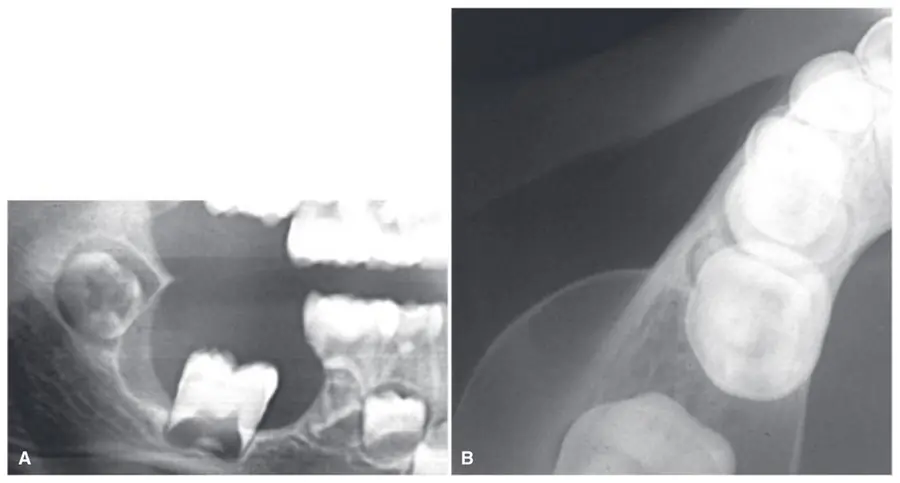
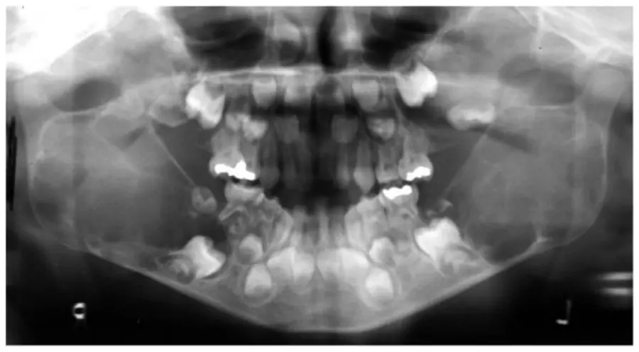

نسخه استخراجشده؛ ترجمه یا تأیید علمی انجام نشده است. وضعیت: captured
نخستین پرسش: ضایعه موضعی است یا منتشر؟ «اگر ظاهری غیرطبیعی همهی ساختارهای استخوانی ناحیهی فک و صورت را بهطور یکنواخت درگیر کند، باید فرایندهای بیماری منتشر مثل ناهنجاریهای متابولیک یا اندوکرین استخوان در نظر گرفته شوند.»

و اگر موضعی بود، پرسش بعدی: یکطرفه یا دوطرفه؟ «دیسپلازی فیبرو شایعتر یکطرفه است، در حالی که بیماری پاژهی استخوان و کروبیسم در فکها همیشه دوطرفه دیده میشوند.» و یک هشدار: «بسیاری از واریاسیونهای آناتومی نرمال هم تمایل به دوطرفه بودن دارند» — مثل حفرهی عمیق غدهی سابمندیبولار و توریهای مندیبل.
حالا مهمترین ابزار این درس: اپیسنتر. «شناسایی مرکز هندسی یا اپیسنتر یک ضایعه میتواند در تعیین نوع سلول یا بافت درون آن ناهنجاری کمک کند.»
چطور تخمینش بزنی؟ «با شناسایی نقطهی میانی گسترش مزیودیستال، فوقانی-تحتانی و باکولینگوال ناهنجاری.» ولی «این تخمین در ضایعات بسیار بزرگ یا ضایعاتی با حاشیهی نامشخص دقت کمتری پیدا میکند».
و حالا نقشهی اپیسنتر — این پنج قاعده را حفظ کن:
و یک قاعدهی ظریف دربارهی سینوس: «اگر اپیسنتر درون سینوس ماگزیلاری باشد، ضایعه منشأ ادنتوژنیک ندارد — برخلاف ضایعهای که کف آنتروم را از زائدهی آلوئولار ماگزیلا به سمت بالا جابهجا کرده است.» و نشانهی رادیوگرافیکش: نبود کورتکس محیطی در سودوکیست احتباسی نشان میدهد از درون سینوس آمده؛ در حالی که کیست ادنتوژنیکِ برخاسته از زائدهی آلوئولار، کورتکسی گرداگرد خود دارد و کف سینوس را بالا رانده است.
برخی ضایعات محلهای ترجیحی دارند. ولی استفاده از این محلها هشداری جدی به همراه دارد.

هشدار: «هرچند این شکل از موضعیسازی بیماری اغلب استفاده میشود، اغلب غیرقابلاتکا است. بنابراین این شکل از محل هرگز نباید بهعنوان ویژگی اصلی یا تنها ویژگی در تفسیر ناهنجاریها به کار رود. بلکه ممکن است در تحلیل نهایی بهعنوان وسیلهای برای اعتبارسنجی تشخیصهای محتمل در نظر گرفته شود.»
سه نمونه:
تک یا چندگانه؟ «تعیین اینکه یک ناهنجاری منفرد یا چندگانه است، در فهم سازوکار بیماری کمک میکند. افزون بر آن، فهرست ناهنجاریهای چندگانهی همظاهر در فکها نسبتاً کوتاه است.»
و همان فهرست کوتاه — پنج مورد که باید بشناسی: دیسپلازی سمنتو-اوسئوس، کراتوسیست ادنتوژنیک، ضایعات بدخیم متاستاتیک، مولتیپل میلوما، انفیلترای لوسمیک. «البته استثناها ممکن است رخ دهند، ولی این معیارهای کلی راهنمای رسیدن به تفسیر یا تشخیص دقیقاند».
چرا این فهرست ارزشمند است؟ چون چندگانه بودن، فهرست افتراقی را از دهها مورد به پنج مورد کاهش میدهد. کمتر پرسشی در رادیولوژی فک اینقدر سریع فهرست را کوچک میکند.